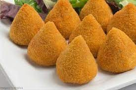

Coxinha

Description
Coxinha is a popular food in Brazil consisting of chopped or shredded chicken meat,
covered in dough, molded into a shape resembling a drumstick, battered and fried. Wikipedia
Ingredients
- Pasta:
- 2 liters of water
- 1 kg of sifted wheat flour
- 2 chicken broths
- 1 spoon of margarine
- 1 level spoon of salt
- 1 spoon of coloring
- Filling:
- 1 kg of cooked and shredded chicken breast
- 2 medium onions chopped
- 1 cup chopped parsley
- chopped red pepper to taste
- 2 crushed garlic cloves
- salt to taste
- colorific to taste
- oil or olive oil
- To bread:
- 2 egg whites
- 1 liter of water
- 1 pinch of salt
- 2 cups of flour (wheat)
- 2 kg of bread flour
Steps
- For mass:
- In a pan, add the water (preferably the water that cooked the chicken), the two chicken stocks, the margarine, the salt and the coloring agent.
- Leave the mixture on the fire until it boils.
- After boiling, add the sifted flour and, with the help of a wooden spoon, keep stirring until the dough comes off the pan.
- Remove from heat and place on a smooth surface greased with margarine.
- Let it cool and knead the dough constantly so it doesn't form a crust.
- For the filling:
- In a pan with oil or olive oil, add the crushed garlic, chopped red pepper and chopped onion, fry everything until golden,
add the cooked and shredded chicken breast and sauté for a few minutes. Add salt and coloring agent.
- Turn off the heat and add the chopped parsley, mix well and let it cool.
- For assembly:
- Spread some butter on your hands, take a portion of the dough (depending on the desired size of the coxinha), form a ball and with the help of your index finger,
make a cavity in the dough.
- Place a portion of the stuffing and close by pinching the mouth of the cavity with the inside of your thumb and forefinger.
- To bread:
- Mix the water and the whites, beat with the help of a fork for a few minutes, add the salt to the wheat flour and beat until the flour balls disappear.
- Pass the ready drumsticks through this mixture, remove the excess and pass through the wheat flour.
- After you finish breading the drumsticks, repeat the operation.
- To fry:
- In a pan or deep pan, put enough oil to cover the drumstick, let it heat up well (190º to 200º C) and
fry the drumsticks little by little so that the oil does not cool, which can cause the drumsticks to crack.
- Wait for it to brown well, drain and enjoy.
Recipes
Back to top